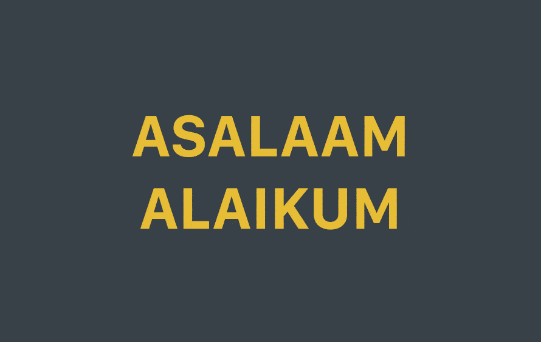

What is it?
Glottologist is JavaScript framework that works in the browser (or on NodeJS). It will help you to provide a different version of your website, depending on the user language.

Stay productive
With his well engineered functions, Glottologist will not destroy your already existing app/website. The philosophy behind Glottologist (and my other projects), is that you should only add, not remove or refactorize the code. So, you'll be able to integrate Glottologist with each of your projects 😊.
Installation
Glottologist is simple to install and setup. Here is how you install the browser and node version.